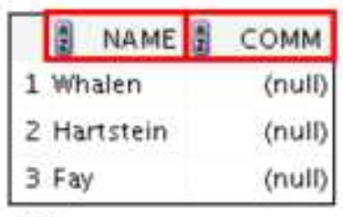
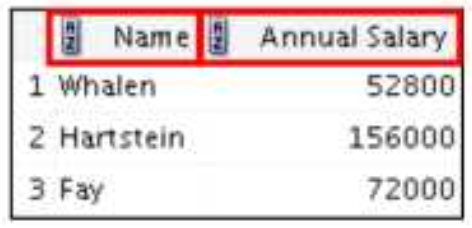

SELECT 구문을 사용한 데이터 검색
🎬 SQL 문법은 기본적으로 대소문자를 구분하지 않는다.
☑️ 문법
SELECT * | {[DISTINCT] column | expression [alias], ...}
FROM table;
1. 테이블 구조 조회
DESCRIBE employees

2. 테이블로부터 데이터 검색
1) SELECT 구문
SELECT *
FROM department;
- ‘*‘은 모든 것을 보여달라고 할 때 사용한다.
- SQL 구문 또한 세미콜론(;)을 사용해서 문장이 끝났다는 것을 표시하기 때문에 명령어를 실행하려면 마지막에 세미콜론을 꼭 찍어줘야 한다.
SELECT department_id, location_id
FORM departments;
- SELECT 뒤에 컬럼명을 지정하면 해당 컬럼에 해당하는 내용들만 보여달라는 뜻이 된다.
SELECT last_name, salary, 12*salary+100
FROM employees;
- 12*salary+100 처럼 내가 원하는 계산을 한 결과를 출력하게 할 수도 있다.
🔸 입력한 명령어 수정 (마지막으로 쓴 명령어와 비슷한 명령어를 또 써야 할 때 유용하다)
- SQL에서는 가장 마지막에 입력한 구문 하나만 버퍼에 저장되어서 이것을 수정할 수 있다.
ed - 위 명령어를 입력하고 엔터를 치면 버퍼를 수정할 수 있는 모드에 들어갈 수 있다.
i - 를 누르면 하단에 –INTSERT–가 표시되며 버퍼에 저장된 명령어를 수정할 수 있다.
- 이 때 구문의 마지막에 세미콜론을 입력하면 안 된다!!!
- 모든 수정이 끝나면 ESC를 눌러 수정을 종료한 뒤
:wq - 위 명령어를 입력하면 버퍼 수정 모드를 빠져나온다.
/ + ENTER - ’/’를 입력하고 엔터를 누르면 버퍼에 저장된 명령어를 실행하는 동작이다. 모든 수정을 마치고 나와서 ‘/’ + 엔터를 실행해주면 아까 수정했던 명령어가 실행되는 것을 볼 수 있다.
2) null값이란?
- 사용할 수 없는 값, 알려지지 않은 값, 할당받지 못한 값, 모르는 값, 아직 정의되지 않은 값 등…
- null은 0(zero)이나 공백과는 다른 특수한 값으로 모든 데이터타입에 사용 가능하다.
3) Column Alias
- 컬럼명에 별명을 붙이는 것
- 원래 정해져 있는 컬럼명을 사용자가 보기에 좀 더 알아보기 쉽게 표시하고 싶을 때 사용한다.
1️⃣ 컬럼명 AS alias
2️⃣ 컬럼명 alias
3️⃣ 컬럼명 [AS] “Alias” => 대소문자 구분, 공백 포함, 특수문자 포함을 원하는 경우
SELECT last_name AS name, commission_pct comm FORM employees;
SELECT last_name "Name", salary*12 "Annual Salary" FROM employees;
4) 연결 연산자 (||)
SELECT last_name || job_id AS "Employees"
FROM employees;
-
로 연결된 컬럼들을 묶어서 한 컬럼에 표시해 준다. 이것 또한 Alias 지정이 가능하다.
5) 리터럴 문자
- 리터럴 문자란 쿼리 구문에 포함된 일반 문자, 숫자, 날짜 값
- 문자나 날짜 리터럴은 작은 따옴표로 묶어서 작성해야 함
SELECT last_name || ' is a ' || job_id AS "Employee Details" FROM employees; - Alias를 지정하지 않았다면 ‘last_name is a job_id’ 라는 컬럼명으로 표시된다.
6) DISTINCT 키워드
- 중복된 값을 자동으로 제거해 주는 키워드
SELECT DISTINCT department_id FROM employees;